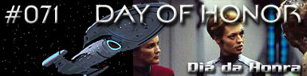
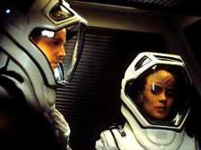
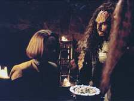
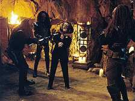
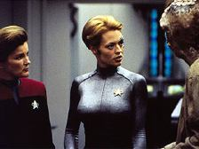
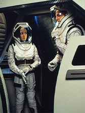

|
Voyager
Temporada 4

Anlise do episdio por
Daniel
Sasaki



|
MANCHETE
DO EPISDIO Data Estelar: Desconhecida. Seven of Nine encontra dificuldades em passar o tempo na rea de cargas, por estar desacostumada a ficar sozinha. Chakotay a designa para trabalhar na Engenharia. O grande problema que Torres est tendo um dia difcil. Dormiu demais e perdeu o horrio, sua ducha snica pifou, no teve tempo de tomar o caf da manh e, para completar, alguns dos engenheiros faltaram ao trabalho por estarem doentes. Assim, ela no reage muito bem presena da ex-Borg por perto, que vem para assisti-la na criao de um condute de transdobra. Definitivamente, no est com humor para celebrar o Dia da Honra, um ritual Klingon de auto-exame das aes. Paris tenta encoraj-la, mas ela o afasta, temendo uma aproximao mais ntima. Enquanto isso, a Voyager encontra uma nave com refugiados Caatati em busca de suprimentos. Os Caatati explicam que a maior parte da raa foi assimilada pelos Borgs e que quase nada lhes restou. Janeway lhes oferece parte das reservas de alimentos.Mais tarde, o lder dos aliengenas fica indignado ao descobrir que a tripulao humana inclui uma ex-zango. Na Engenharia, Seven of Nine continua trabalhando no condute, mas durante os primeiros testes ocorre um acidente e Torres obrigada a ejetar o ncleo do reator de dobra. Torres e Paris partem em uma nave auxiliar para recuperar o ncleo, mas ao chegarem s coordenadas deparam-se com uma nave Caatati que tenta resgat-lo para si. Durante um confronto, os aliengenas disparam contra a nave auxiliar, destruindo o seu campo de integridade estrutural. Torres e Paris se transportam para o espao em trajes especiais. Eles ligam seus sistemas de comunicao e geram uma onda que, esperam, chegar Voyager antes que fiquem sem ar. Na Voyager, a capit questiona Seven of Nine sobre o acidente na Engenharia e fica feliz que a nova tripulante no tenha sido responsvel por ele.  A nave recebe o chamado de socorro de Torres e Paris, mas antes que possa resgat-los, os Caatati chegam com o ncleo do reator. Eles ameaam destruir a Voyager a menos que Janeway lhes d mais suprimentos e entregue Seven of Nine. A ex-zango se oferece para ir, mas a capit recusa. Seven ento oferece para construir uma matriz de energia para os Caatati, que produzir todo o thorium de que eles precisam para manter seus sistemas. Os Caatati aceitam e devolvem o reator. Quando a crise termina, a Voyager consegue resgatar os oficiais e Torres descobre, diante da possibilidade de morrer, que est apaixonada por Paris.
O episdio bom, mas no chega a ser extraordinrio, como a trilogia anterior. A boa notcia que pela primeira vez o telespectador tem uma amostra concreta de continuidade na srie. A trama comea quando a Voyager encontra os Caatati, uma raa praticamente destruda pelos Borgs.  Aparece o primeiro questionamento: quo dura a realidade da tripulao da USS Voyager? Eles o tempo ressaltam a precariedade da sua condio, limitam o uso dos replicadores e racionam as reservas de alimentos. Mas as semanas e temporadas passam e os vemos em seus uniformes impecveis, bem nutridos e trabalhando em uma nave limpa. Quem sabe, os Caatati representem mais o que Voyager deveria ter sido, mas nunca foi.  Apesar de o roteiro iniciar o desenvolvimento de Seven, dedicado engenheira-chefe em vrios nveis. B'Elanna enfrenta o pesadelo de todo engenheiro: a ejeo do ncleo do reator. Quando parte com Paris em misso para recuper-lo, enfrenta os Caatati e tem sua nave auxiliar destruda (a propsito, o terceiro episdio da temporada e j se vai uma segunda nave auxiliar). Os dois acabam se transportando para o espao em trajes pressurizados. curioso que, em uma srie de fico-cientfica como Jornada, rarssimas vezes a ao com os personagens se desenvolva no vcuo do espao. Em "Day of Honor", a produo foi capaz de criar uma ambientao bem convincente. Alis, a equipe dos efeitos especiais merece aplausos. A seqncia da da perda do reator foi muito boa. No s ela, mas a batalha e o confronto com os Caatati. Neste quarto ano, o visual de Voyager s tende a melhorar.  O f s fica com o p atrs em relao a uma coisa: Voyager declaradamente segue uma linha anti-arcos longos de histrias. Por que, ento, os produtores decidiram investir em um romance a bordo? Rker e Deanna, Worf e Dax... todos tiveram os seus momentos. Basta esperar em que dar a explosiva relao entre um ex-renegado e uma Klingon.
Janeway - "Wouldn't you prefer to be
called by your Human name... Annika?" B'Elanna
- "Tell me something. When you hear about people like the Caatati, do you
have any feelings of remorse?" B'Elanna
- "Torres to Janeway."
Roteiro de
Jeri Taylor Elenco: Kate
Mulgrew como Kathryn Janeway Elenco
convidado: |